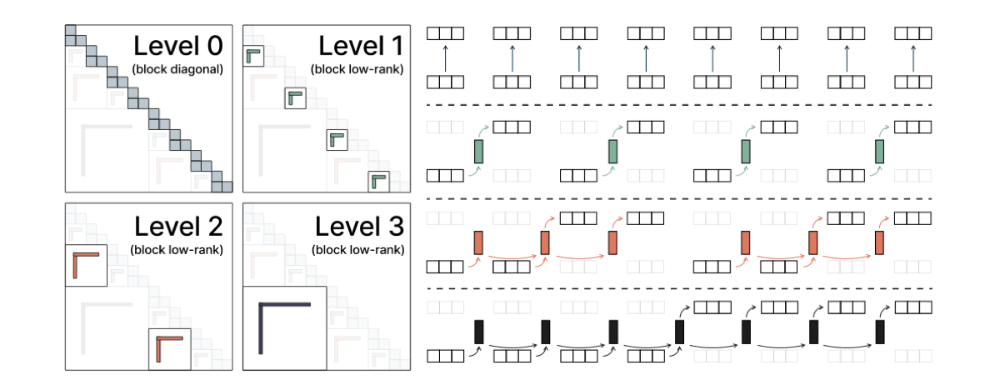

Why it matters왜 중요한가
The real lever isn't "linear vs. quadratic" — it's how much of the past you can keep without paying quadratic cost.
진짜 핵심은 "선형이냐 이차냐"가 아니라, 이차 비용 없이 과거를 얼마나 보존하느냐다.
Linear attention and SSMs (Mamba-2, Gated DeltaNet) win on efficiency by compressing the entire prefix into one fixed-size hidden state — but that single summary fundamentally caps associative recall over long context. Full attention keeps everything but pays O(T²). Log-Linear Attention finds a principled middle ground: instead of one state or T states, keep O(log T) states at exponentially growing time scales. The authors show this corresponds to swapping the semiseparable masking matrix of linear attention for a hierarchical (HODLR-type) matrix, which still admits a sub-quadratic, hardware-friendly training algorithm.
선형 어텐션과 SSM(Mamba-2, Gated DeltaNet)은 전체 프리픽스를 하나의 고정 크기 은닉 상태로 압축해 효율을 얻지만, 그 단일 요약이 긴 문맥에서의 연상 회상(associative recall)을 근본적으로 제한한다. 전체 어텐션은 모든 것을 보존하지만 O(T²)를 치른다. Log-Linear Attention은 원칙적인 중간 지점을 찾는다: 상태 1개도 T개도 아닌, 지수적으로 커지는 시간 스케일 위에 O(log T)개의 상태를 유지한다. 저자들은 이것이 선형 어텐션의 semiseparable 마스킹 행렬을 계층적(HODLR형) 행렬로 교체하는 것에 해당하며, 그럼에도 하위 이차(sub-quadratic)이고 하드웨어 친화적인 학습 알고리즘이 가능함을 보인다.

By the numbers핵심 숫자
(vs. O(T²) softmax)학습 연산량
(softmax의 O(T²) 대비)
(vs. O(1) linear, O(T) softmax)디코딩 메모리
(선형 O(1)·softmax O(T) 대비)
beats FlashAttention-2 (fwd+bwd)이 길이를 넘으면 커널이
FlashAttention-2(fwd+bwd) 능가
surpasses Transformer throughputLog-Linear Mamba-2가 Transformer
처리량을 추월하는 시퀀스 길이
DeltaNet (19.71 → 18.09)LAMBADA ppl, Log-Linear Gated
DeltaNet (19.71 → 18.09)
log-linear variantslog-linear 변형이 도달한
MQAR 정확도
Results — log-linear lifts both backbones결과 — 두 백본 모두를 끌어올린다
| Model | Wiki. ppl ↓ | LMB. ppl ↓ | LMEval avg ↑ |
|---|---|---|---|
| Transformer | 21.56 | 22.14 | 44.0 |
| Mamba-2 | 22.44 | 24.14 | 44.8 |
| w/ Log-Linear | 22.11 | 21.86 | 44.9 |
| Gated DeltaNet | 21.73 | 19.71 | 45.0 |
| w/ Log-Linear | 21.45 | 18.09 | 45.5 |
In one diagram한 장의 그림
The core idea, in two pieces핵심 아이디어, 두 조각
Fenwick-tree buckets
Partition the prefix [0, t) into disjoint buckets of exponentially increasing size via a Fenwick (binary-indexed) tree, giving O(log T) buckets. Each bucket ℓ keeps its own recurrent state St(ℓ), and the output sums them with data-dependent weights λt(ℓ). If all λ are equal, it collapses back to plain linear attention.
프리픽스 [0, t)를 Fenwick(이진 인덱스) 트리로 지수적으로 커지는 서로소 버킷들로 분할해 O(log T)개의 버킷을 만든다. 각 버킷 ℓ은 자체 순환 상태 St(ℓ)를 유지하고, 출력은 데이터 의존 가중치 λt(ℓ)로 이들을 합산한다. 모든 λ가 같으면 평범한 선형 어텐션으로 환원된다.
Hierarchical mask MH
In parallel form the bucketing becomes O = (QKᵀ ⊙ MH) V, where MH is a hierarchical (HODLR / "quasi-H") matrix. Because the elementwise product of a semiseparable matrix and an H-matrix is still an H-matrix, the same trick drops straight into Mamba-2's gated mask and Gated DeltaNet's delta-rule mask.
병렬 형태에서 버킷화는 O = (QKᵀ ⊙ MH) V가 되며, 여기서 MH는 계층적(HODLR/"준-H") 행렬이다. semiseparable 행렬과 H-행렬의 원소별 곱이 여전히 H-행렬이므로, 같은 기법이 Mamba-2의 게이트 마스크와 Gated DeltaNet의 delta-rule 마스크에 그대로 끼워진다.
How it works어떻게 작동하나
- Bucket the past과거를 버킷화A Fenwick-tree decomposition splits the prefix into O(log T) buckets of size 1, 2, 4, …, keeping recent tokens at fine resolution and older ones coarsely summarized.Fenwick 트리 분해가 프리픽스를 크기 1, 2, 4, …인 O(log T)개의 버킷으로 나눠, 최근 토큰은 세밀하게 오래된 토큰은 거칠게 요약한다.
- Weight each scale스케일별 가중A non-negative, data-dependent coefficient λt(ℓ) (a linear function of xt) decides how much each temporal scale contributes to the output.비음(non-negative)이며 데이터 의존인 계수 λt(ℓ)(xt의 선형 함수)가 각 시간 스케일이 출력에 기여하는 정도를 결정한다.
- Train via chunkwise scanchunkwise 스캔으로 학습Decompose MH into a block-diagonal intra-chunk part plus block-low-rank inter-chunk parts; run O(log T) independent parallel scans, fused in custom Triton kernels.MH를 블록 대각인 chunk 내부 항과 블록 저랭크인 chunk 간 항으로 분해하고, O(log T)개의 독립 병렬 스캔을 돌려 커스텀 Triton 커널에서 융합한다.
- Decode in log-time로그 시간 디코딩At inference, a Fenwick-like recurrence merges and promotes buckets based on the least-significant set bit of t, giving O(log T) time and memory per step.추론 시에는 t의 최하위 set 비트에 따라 버킷을 병합·승격하는 Fenwick형 순환을 써서, 스텝당 O(log T) 시간·메모리를 달성한다.
What to take away그래서, 가져갈 것
A new point on the efficiency–expressivity frontier. O(T log T) compute and O(log T) memory sit cleanly between linear and softmax attention, with a real kernel that beats FlashAttention-2 past 8K.
효율–표현력 곡선 위의 새 지점. O(T log T) 연산과 O(log T) 메모리는 선형과 softmax 어텐션 사이에 깔끔히 자리하며, 8K를 넘으면 FlashAttention-2를 실제로 능가하는 커널이 있다.
It's a drop-in upgrade, not a new model. The hierarchical mask composes with existing semiseparable masks, so Mamba-2 and Gated DeltaNet both improve without redesign.
새 모델이 아니라 끼워넣는 업그레이드. 계층적 마스크가 기존 semiseparable 마스크와 결합되어, 재설계 없이 Mamba-2와 Gated DeltaNet 모두 향상된다.
Structured-matrix theory pays off. Framing the mask as a HODLR matrix is what unlocks both the sub-quadratic training algorithm and the log-memory decoder.
구조화 행렬 이론의 결실. 마스크를 HODLR 행렬로 본 것이 하위 이차 학습 알고리즘과 로그 메모리 디코더를 동시에 가능하게 한 열쇠다.